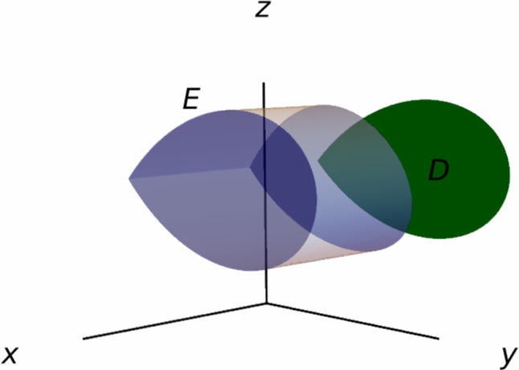
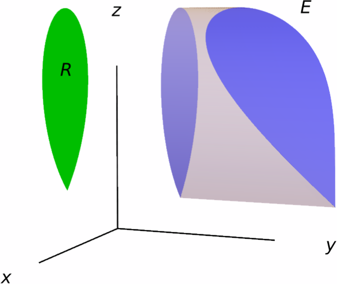
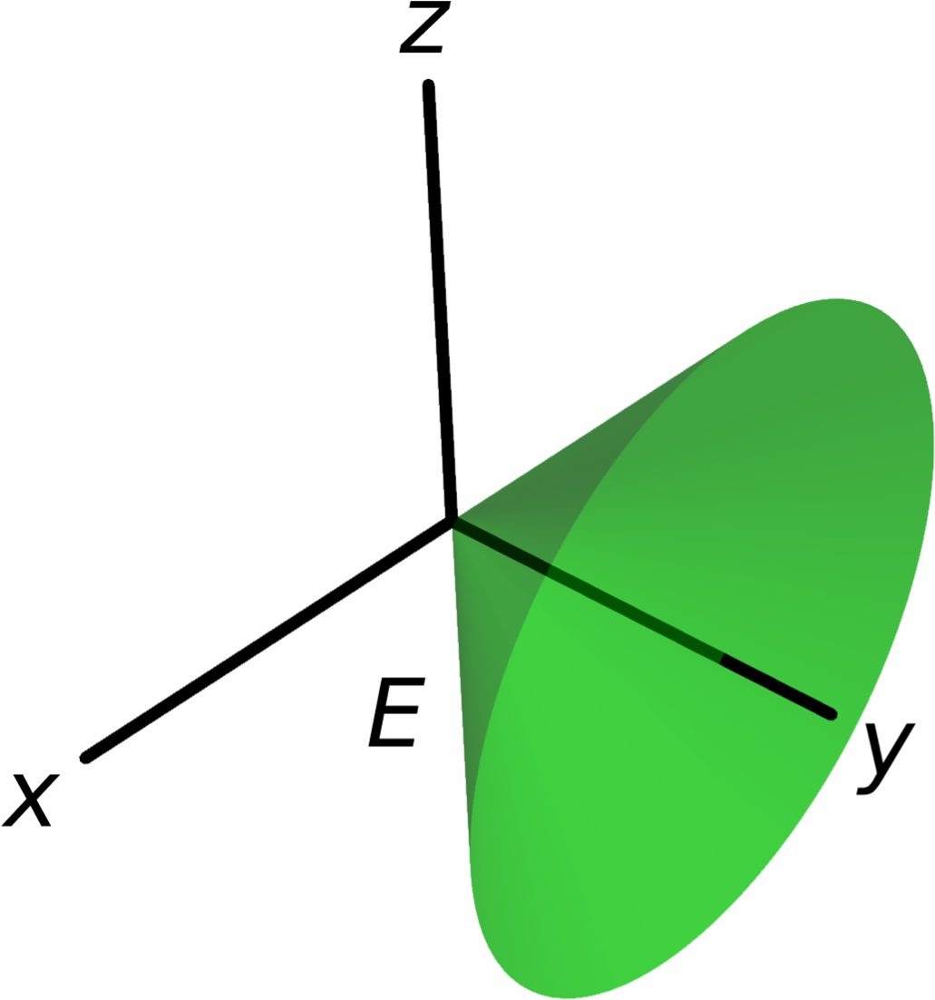
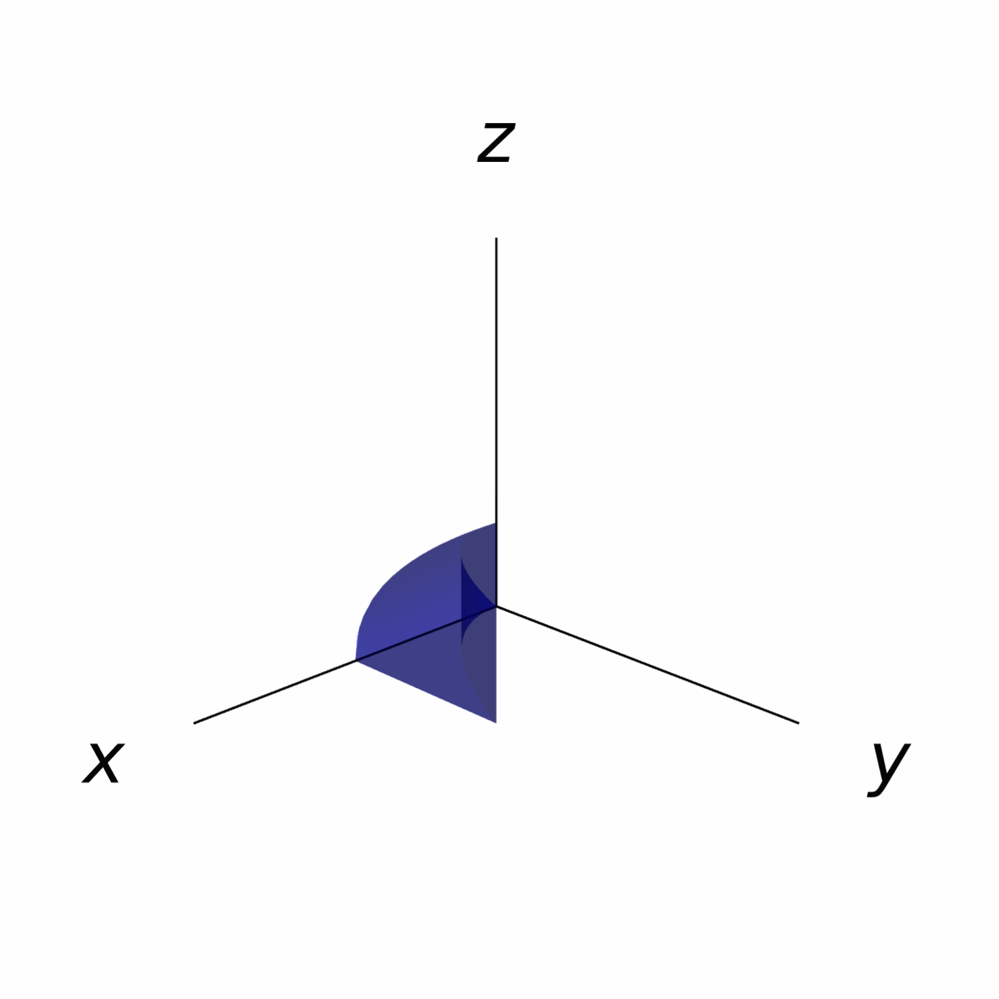

Triple Integrals
In this section we discuss how to compute the (triple) integral of a function of three variables. The methods that we will see here are essentially the same as those discussed in the case of double integrals.
Triple Integrals over Boxes
The three-dimensional version of a rectangle is a (rectangular) box. A box in $\RR^3$ is a set of the form \[ R=[a,b]\times [c,d]\times [r,s] = \big\{(x,y,z)\mid a\leq x\leq b,\,c\leq y\leq d,\,r\leq z\leq s\big\}. \]
Our first course of action is to define the triple integral of a function $f(x,y,z)$ on the box $R$.
The process is very similar to the two-dimensional case: take sequences of numbers \[ \begin{aligned} &x_0=a < x_1 < \cdots < x_{m-1} < x_m = b,\\ &y_0=c < y_1 < \cdots < y_{m-1} < y_n = d,\\ &z_0=r < z_1 < \cdots < z_{m-1} < z_p = s. \end{aligned} \] such that the distance between each $x_i$ and $x_{i+1}$ is $\Delta x$, the distance between each $y_j$ and $y_{j+1}$ is $\Delta y$, and the distance between each $z_k$ and $z_{k+1}$ is $\Delta z$. These sequences allow us to partition $R$ into the subboxes \[ R_{ijk}=[x_{i-1},x_i]\times [y_{j-1},y_j]\times [z_{k-1},z_k], \] whose volume is $\Delta V\Delta x\Delta y\Delta z$.
Now, for each subrectangle $R_{ijk}$, choose a point $q_{ijk}$ contained inside it. These choices allow us to form the sum \[ \sum_{i=1}^n\sum_{j=1}^m\sum_{k=1}^pf(q_{ijk})\Delta V. \]
Just as in the case of two variables, most of the functions that we will be working with are automatically integrable:
In addition, while the definition that we gave for the triple integral is conceptually useful, it is not practical for actually computing integrals. However, Fubini's theorem still applies in this case:
Suppose $R=[a,b]\times[c,d]\times[r,s]$ is a box and $f\colon R\to \RR$ is a continuous function. Then, the triple integral of $f$ over $R$ is \[ \iiint_R f(x,y,z)\,dV = \int_r^s\int_c^d\int_a^bf(x,y,z)\,dx\,dy\,dz. \] In addition, the triple integral $\iiint_Rf(x,y,z)\,dV$ can also be computed using any different order of the variables of integration.
Solution.
Using Fubini's theorem, we obtain \[ \begin{aligned} \iiint_R x^2yz\,dV =& \int_{-1}^1\int_0^2\int_0^1x^2yz\,dz\,dy\,dx = \int_{-1}^1\int_0^2\bigg[\frac{x^2yz^2}{2}\bigg]_{z=0}^{z=1}\,dy\,dx = \int_{-1}^1\int_0^2\frac{x^2y}{2}\,dy\,dx \\=& \int_{-1}^1\bigg[\frac{x^2y^2}{4}\bigg]_{y=0}^{y=2}\,dx = \int_{-1}^1x^2\,dx = \bigg[\frac{x^3}3\bigg]_{x=-1}^{x=1}=\frac23. \end{aligned} \]
Integration over General Regions
Just as with functions of two variables, we can integrate functions of three variables over regions that are not necessarily boxes:
Although the above definition is technically valid for any bounded region, in this course we will focus on three families of regions of integration, which will be similar to the regions of Type I and regions of Type II for double integrals.
Definition. A solid region $E$ is said to be of Type I if it is of the form \[ E=\big\{(x,y,z)\mid (x,y)\in D,\, g_1(x,y)\leq z\leq g_2(x,y)\big\}, \] where $D$ is a region in the plane.
In other words, $E$ is a region of Type I if it is enclosed between two functions of $x$ and $y$.

Using Fubini's Theorem, one can show that the integral of any continuous function $f(x,y,z)$ on the region $E$ is given by \[ \iiint_Ef(x,y,z)\,dV = \iint_D\int_{g_1(x,y)}^{g_2(x,y)}f(x,y,z)\,dz\,dA. \]
Compute the integral \[ \iiint_E 2z\,dV \] over the solid region $E$ in the first octant that is enclosed by the $xy$-plane, the surface $z=3xy$ and the plane $x+y=2$.

Solution.
We can represent the region $E$ as a region of Type I. Indeed, if we let $D$ be the triangle \[ D=\big\{(x,y)\mid 0\leq x\leq 2,\,0\leq y\leq 2-x\big\}, \] then $E$ is given by \[ E=\big\{(x,y,z)\mid (x,y)\in D,\,0\leq z\leq 3xy\big\}. \]
As a consequence, we can compute the desired integral as \[ \begin{aligned} \iiint_E2z\,dV =& \iint_D\int_0^{3xy}2z\,dV = \int_0^2\int_{0}^{2-x}\int_0^{3xy}2z\,dz\,dy\,dx = \int_0^2\int_0^{2-x}\big[z^2\big]_{z=0}^{z=3xy}\,dy\,dx \\=& \int_0^2\int_0^{2-x}9x^2y^2\,dy\,dx = \int_0^2\big[3x^2y^3\big]_{y=0}^{y=2-x}\,dx = \int_0^23x^2(2-x^3)\,dx \\=& \frac{16}{5}. \end{aligned} \]
We can also define two more types of solid regions on which integration looks similar to the case of regions of Type I:
Definition. A solid region $E$ is said to be of Type II if it is of the form \[ E=\big\{(x,y,z)\mid (y,z)\in D,\, g_1(y,z)\leq x\leq g_2(y,z)\big\}, \] where $D$ is a region in the plane.
In other words, $E$ is a region of Type II if it is enclosed between two functions of $y$ and $z$.

If $f\colon E\to \RR$ is a continuous function, then the integral of $f$ over $E$ is \[ \iiint_E f(x,y,z)\,dV = \iint_D \int_{g_1(y,z)}^{g_2(y,z)}f(x,y,z)\,dx\,dA. \]
Definition. A solid region $E$ is said to be of Type III if it is of the form \[ E=\big\{(x,y,z)\mid (x,z)\in D,\, g_1(x,z)\leq y\leq g_2(x,z)\big\}, \] where $D$ is a region in the plane.
In other words, $E$ is a region of Type III if it is enclosed between two functions of $x$ and $z$.

In this case, the integral of a continuous function $f\colon E\to \RR$ over $E$ is equal to \[ \iiint_E f(x,y,z)\,dV = \iint_D \int_{g_1(x,z)}^{g_2(x,z)}f(x,y,z)\,dy\,dA. \]

Solution.
We can present the region $E$ as a region of Type III. Indeed, if we let \[ D=\{(x,z)\mid x^2+z^2\leq 9\} \] be the disk of center $(0,0)$ and radius $3$ in the $xz$-plane, then \[ E=\big\{(x,y,z)\mid (x,z)\in D,\,\sqrt{x^2+z^2}\leq y\leq 3\big\}. \]
Therefore, the integral of $\sqrt{x^2+z^2}$ on $E$ is \[ \iiint_E\sqrt{x^2+z^2}\,dV = \iint_D\int_{\sqrt{x^2+z^2}}^3\sqrt{x^2+z^2}\,dy\,dA = \iint_D\sqrt{x^2+z^2}\big(3-\sqrt{x^2+z^2}\big)\,dA. \]
To continue, we can use polar coordinates, since the region $D$ in polar coordinates is given by \[ \big\{(r,\theta)\mid 0\leq r\leq 3,\,0\leq \theta\leq 2\pi\big\}. \] This gives us \[ \begin{aligned} \iint_D\sqrt{x^2+z^2}\big(3-\sqrt{x^2+z^2}\big)\,dA =& \int_0^{2\pi}\int_0^3r\sqrt{r^2\cos^2\theta+r^2\sin^2\theta} \big(3-\sqrt{r^2\cos^2\theta+r^2\sin^2\theta}\big)\,dr\,d\theta \\ =&\int_0^{2\pi}\int_0^3r^2(3-r)\,dr\,d\theta = \int_0^{2\pi}\int_0^3(3r^2-r^3)\,dr\,d\theta \\ =& \int_0^{2\pi}\bigg[r^3-\frac{r^4}4\bigg]_{r=0}^{r=3} = \int_0^{2\pi}\frac{27}4\,d\theta = \frac{27\pi}2. \end{aligned} \]
Changing the Order of Integration
Because of Fubini's Theorem, whenever we express a triple integral as an iterated integral, we are free to choose the order of integration as we wish. In this case, since there are three variables, we have six possible orders to choose.
- Write the above integral as a triple integral over a solid region $E$.
- Write the five possible iterated integrals that result from changing the order of integration.
Solution.
The outer integral says that the $x$ variable is ranging between $0$ and $1$. The intermediate integral says that $y$ is moving between $0$ and $x^2$. Finally, the inner integral states that $z$ ranges between $0$ and $\sqrt{y}$. Therefore, we can view $I$ as the integral $\iiint_Ef(x,y,z)\,dV$ over the set \[ E=\big\{(x,y,z)\mid 0\leq x\leq 1,\,0\leq y\leq x^2,\,0\leq z\leq \sqrt{y}\big\}. \]
On the right we have an animation showing
the region of integration $E$.
The original integral $I$ may be recovered as
an integral on $E$ (as a region of Type I).
Indeed, if
\[
D=\big\{(x,y)\mid 0\leq x\leq 1,\,0\leq y\leq x^2\big\},
\]
then $E$ is the region enclosed between the functions
$g_1(x,y)=0$ and
$g_2(x,y)=\sqrt{y}$ on $D$.

Now, note that $D$ can also be presented as \[ D=\big\{(x,y)\mid 0\leq y\leq 1,\,\sqrt{y}\leq x\leq 1\big\}, \] so we have \[ I=\iint_D\int_0^{\sqrt{y}}f(x,y,z)\,dz\,dA = \int_0^1\int_{\sqrt{y}}^1\int_0^{\sqrt{y}}f(x,y,z)\,dz\,dx\,dy. \]
Now, let us view $E$ as a region of Type II. To do this, we first find the projection of $E$ onto the $yz$-plane. This projection is \[ D'=\big\{(y,z)\mid 0\leq y\leq 1,\,0\leq z\leq \sqrt{y}\big\}. \] Indeed, note that for the points in $E$ we have $0\leq y\leq x^2\leq 1$ and $0\leq z\leq \sqrt{y}$. Now, due to the first two inequalities that define $E$, the variable $x$ is ranging between $\sqrt{y}$ and $1$, so \[ I=\iint_{D'}\int_{\sqrt{y}}^1f(x,y,z)\,dx\,dA =\int_0^1\int_0^{\sqrt{y}}\int_{\sqrt{y}}^1f(x,y,z)\,dx\,dz\,dy. \]
Now, the region $D'$ could also have been written as \[ D'=\big\{(y,z)\,0\leq z\leq 1,z^2\leq y\leq 1\big\}, \] and therefore \[ I=\iint_{D'}\int_{\sqrt{y}}^1f(x,y,z)\,dx\,dA =\int_0^1\int_{z}^{1}\int_{\sqrt{y}}^1f(x,y,z)\,dx\,dy\,dz. \]
Finally, we may present $E$ as a region of Type III. Indeed, the projection of $E$ onto the $xz$-plane is \[ D''=\big\{(x,z)\mid 0\leq x\leq 1,0\leq z\leq x\big\}, \] and (on $E$) $y$ would be bounded between the functions $0$ and $x^2$ on $D''$. This gives \[ I=\iint_{D''}\int_0^{x^2}f(x,y,z)\,dy\,dA = \int_0^1\int_0^x\int_0^{x^2}f(x,y,z)\,dy\,dz\,dx. \]
However, we could also have written \[ D''=\big\{(x,z)\mid 0\leq z\leq 1,\,z\leq x\leq 1\big\}, \] and therefore \[ I=\iint_{D''}\int_0^{x^2}f(x,y,z)\,dy\,dA = \int_0^1\int_z^1\int_0^{x^2}f(x,y,z)\,dy\,dx\,dz. \]
We have thus obtained all possible iterated integrals representing $I$.
Properties of Triple Integrals
We finish this section stating the main properties of triple integrals, which are essentially the same as those of double integrals.
- Additivity of the integral: \[ \iiint_E (f(x,y,z)+g(x,y,z))\,dV = \iiint_E f(x,y,z)\,dV + \iiint_E g(x,y,z)\,dV. \]
- Homogeneity of the integral: \[ \iiint_E af(x,y,z)\,dV = a\iiint_E f(x,y,z)\,dV. \]
- Monotonicity of the integral: if $f(x,y,z)\geq g(x,y,z)$ for all $(x,y,z)$ in $E$, then \[ \iiint_E f(x,y,z)\,dV \geq \iiint_E g(x,y,z)\,dV. \]
If $E=E_1\cup E_2$ is the union of two regions that do not intersect (except possibly at their boundaries), then \[ \iiint_E f(x,y)\,dV = \iiint_{E_1} f(x,y)\,dV+ \iiint_{E_2} f(x,y)\,dV. \]